手筆 · 十五种可能以手为笔，
以手为笔，
让想象发生。
从认识一个字，到塑造一个自己。每一次落笔，都有新的去处。
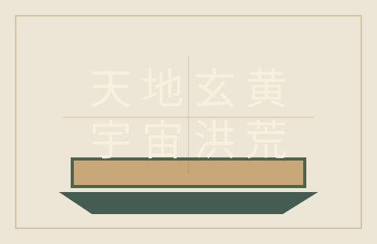
字迹 · 收藏
字迹方舟
把每次落笔收进自己的字库。汇集字样、整理字集、生成个人字体。
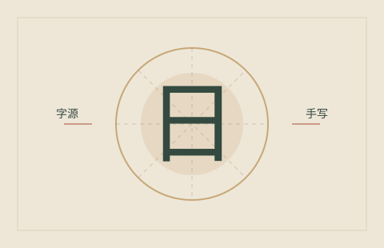
识字 · 字源
识字启蒙
从一个大字开始，听读音、看字源，在手写中认识汉字。
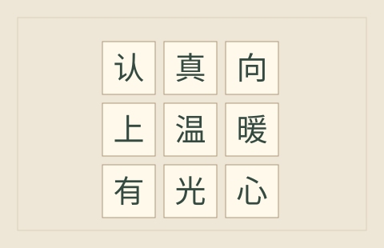
九字 · 见心
见字识人
选九个亲手写过的字，收一封关于自己的温暖赞美信。
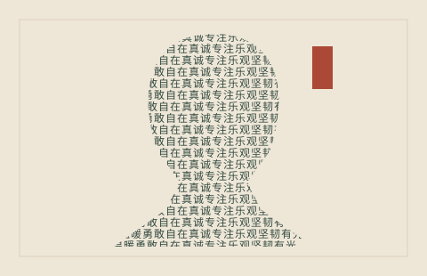
手写 · 肖像
相由字生
用自己的手写品格词，把照片织成有温度的文字肖像。

故事 · 纵横
手笔填字
在三体、长征、成语等故事中纵横落笔，九阶闯关。
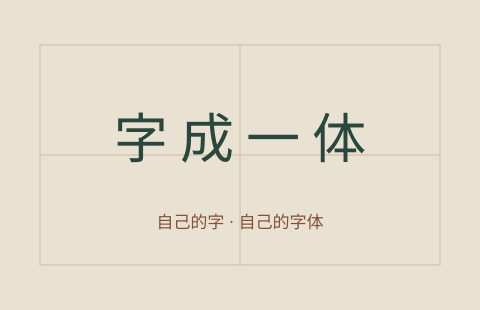
字库 · 字体
字成一体
把真实手写字样变成可安装字体。从补齐缺字到设备预览，一步一步完成。
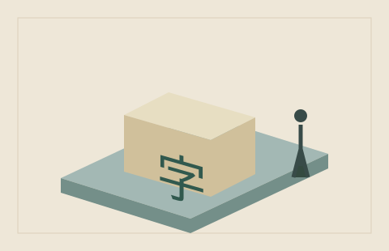
立体 · 展陈
3D打印
把单字、格盘、创作与临帖放进五种展陈场景，导出立体作品。
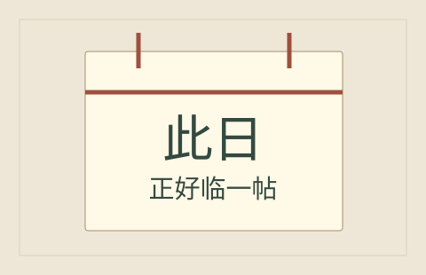
此日 · 此帖
随机临帖
循历史上的今天和时令，遇见一帖适合此刻临写的墨迹。
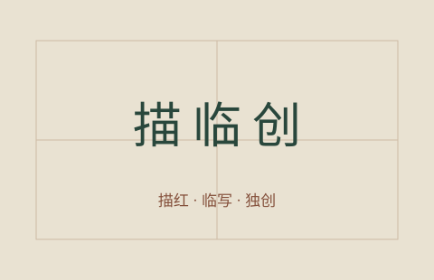
描红 · 临写 · 独创
三笔有神
一帖三练：先得线条章法，再习具体笔法，最后融入自己的风格。
图文 · 排版
美图美文
把照片、书法与文句排成明信片、封面或一页心情。
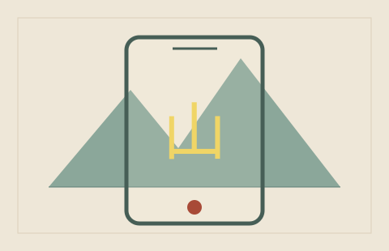
镜头 · 手笔
实景题字
在眼前的风景上写字，把这一刻留成照片与视频。
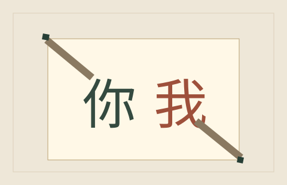
相遇 · 共书
一起写字
邀家人和朋友接着写，让不同的笔迹相遇在同一张纸上。
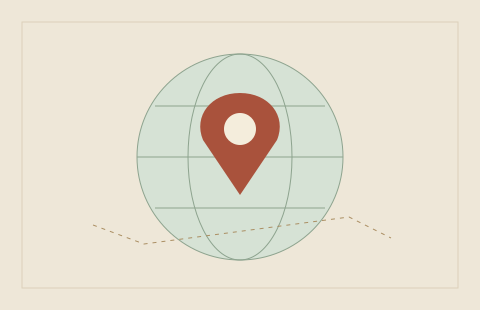
书迹 · 山河
书法地图
循着名帖走到城市、博物馆与文化现场，发现附近书迹。
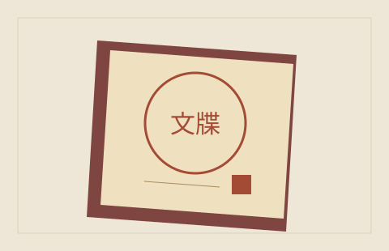
临帖 · 足迹
通关文牒
把临帖足迹收成自己的通关文牒，慢慢走过书法长河。
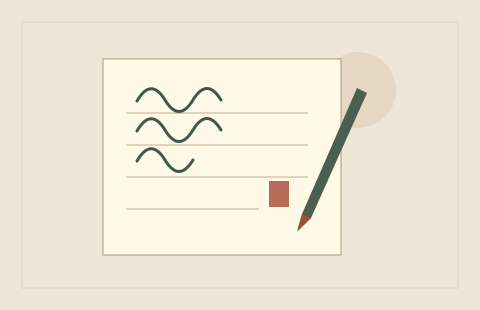
慢写 · 安顿此刻
字愈抄写
抄句子、抄经典、抄给自己。淡字铺底，自然声陪伴，给今天留一页安静。